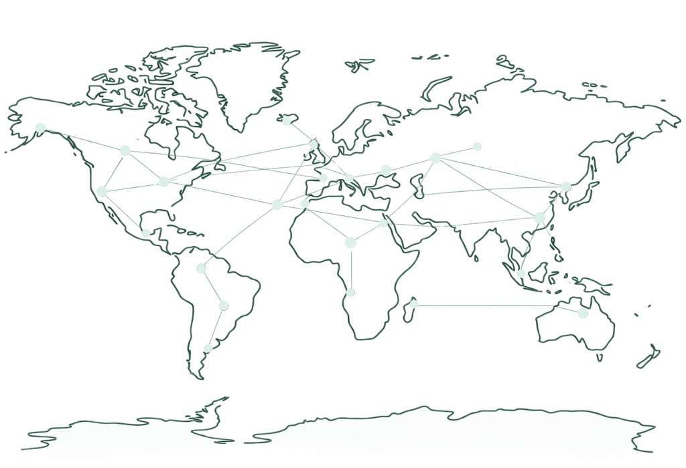

New neurotechnology products launch globally each year. Most are not inventing governance from scratch: they inherit decades of medical device, software, and data accountability frameworks. This reference helps teams find those frameworks early, reduce redesign, and move faster with credible evidence and durable procedures.
Standards and regulatory expectations converge across markets. Discovering them after design freeze turns them into rework; finding them during architecture turns them into requirements.
This index points to primary sources that govern safety, performance, quality management, cybersecurity, evidence expectations, and neural data governance. It covers neurotechnology devices and the software that accompanies them, not pharmaceutical or biological product development.
Five sections, each answering a different question. Standards bodies tell you what good looks like technically. Regulators tell you what is enforceable where. Adjacent fields tell you what has already been solved. Ethics initiatives tell you what is forming. Neural data law tells you what is arriving.
Technical organizations defining safety, interoperability, and device standards.
Agencies setting approval pathways and aligning global medical device rules.
Lessons from cybersecurity and cardiology for secure, robust neurotech.
Groups shaping emerging ethical and human-rights frameworks for neurotechnology.
Current governmental actions to protect neural data and mental privacy.
What was added or revised in each release of this index, and when.
Neurotechnology products operate within established international standards and jurisdiction-specific regulatory regimes that define expectations for safety, performance, interoperability, clinical evidence, and lifecycle oversight. Standards bodies publish technical norms used across markets, while regulators enforce legal requirements locally. Together, these structures create converging benchmarks for what safe, effective, and accountable neurotechnology looks like in practice.
Develops global safety, biocompatibility, and risk-management standards for neurotechnology devices and related medical systems (ISO 13485, 14708, and 10993 series). Its subcommittee JTC 1/SC 43 is creating foundational frameworks for brain-computer interfaces. iso.org
Develops shared definitions, data formats, and reporting guidelines for brain-computer interfaces, so researchers, companies, and regulators can compare results and exchange data. ibci-cc.org
Sets electrical safety and electromagnetic compatibility requirements through the IEC 60601 and 80601 series, core to essential performance of stimulators, EEG systems, and neuroimaging devices. iec.ch
Defines security activities across the health software life cycle and is seeing growing adoption as the reference standard for medical device cybersecurity. It introduces requirements that complement, rather than replace, existing software development lifecycle practices such as those in ISO 13485 or IEC 62304. More in Learnings from Other Fields.
Harmonizes ISO and IEC standards and produces U.S.-specific adaptations such as ANSI/AAMI NS4 for TENS. Serves as the primary link between global standards and FDA recognition. aami.org
Publishes engineering and data-interoperability standards for BCIs, neurofeedback systems, and connected medical devices. Current efforts including IEEE P2731, P2794, and P7700 address unified terminology, research reporting, and responsible neurotech design. ieee.org
Expert consortium developing safety and reporting standards for transcranial ultrasound neuromodulation, addressing a major gap in non-invasive brain-stimulation guidance. itrusst.com
Creates biomedical materials and testing standards relevant to neural implants and MRI safety, including ASTM F2182 and F2503. Complements ISO and IEC by specifying mechanical, thermal, and biological test methods. astm.org
Develops global standards for unique device identification and automatic identification and data capture, ensuring traceability, supply chain integrity, and lifecycle management for implantable and connected neural devices. hibcc.org
The UK's national standards body and a notified body for medical device certification. Adopts ISO and IEC norms such as BS EN ISO 14971 and the 14708 series, and conducts conformity assessments for products entering the UK and EU markets. bsigroup.com
Standards describe what good looks like. Regulators decide what is enforceable in their market, and increasingly coordinate through the International Medical Device Regulators Forum.
Oversees device classification, premarket pathways including 510(k), De Novo, and PMA, clinical trials, and post-market surveillance. Sets requirements for safety, human factors, cybersecurity, and implant performance, and shapes global harmonization through IMDRF working groups on AI/ML and Software as a Medical Device. fda.gov
Defines the legal framework for CE-marked neurodevices in Europe, integrates ISO and IEC standards into conformity assessment, and shapes regulation of AI, digital health, and medical devices across the EU. commission.europa.eu
Oversees medical device safety, market surveillance, and certification within the UK, maintaining alignment with EU MDR while implementing UK-specific conformity assessment through the UKCA mark. gov.uk
Evaluates and approves medical devices under Japan's Ministry of Health, Labour, and Welfare. Regulates neural implants and BCIs and contributes to international harmonization through IMDRF. pmda.go.jp
China's central medical device regulator, responsible for registration, safety evaluation, and adoption of international standards through its Center for Medical Device Evaluation. nmpa.gov.cn
Regulates medical devices and neurotechnology systems through risk-based classification and conformity assessments. Participates actively in IMDRF and recognizes global standards. tga.gov.au
Regional benchmark regulator providing clear classification and expedited pathways. Aligns closely with IMDRF guidance and serves as a leading model for neurotechnology regulation in Asia-Pacific. hsa.gov.sg
National health surveillance agency regulating medical devices including neurostimulation and diagnostic technologies, using a risk-classification system that follows IMDRF principles. gov.br/anvisa
Regulates approval, importation, and compliance of medical devices in Mexico, increasingly aligning with IMDRF and Pan American Health Organization guidance. Classification overview
International Medical Device Regulators Forum. Coalition including the U.S. FDA, UK MHRA, Japan's PMDA, China's NMPA, Australia's TGA, Health Canada, and the European Commission. It aligns medical device frameworks and issues guidance on software as a medical device, post-market surveillance, and quality management systems relevant to neurotechnology. imdrf.org
One example of enforceable quality governance inside a globally harmonized system. QMSR modernizes 21 CFR Part 820 and aligns U.S. requirements with ISO 13485, governing design controls, risk management, supplier oversight, corrective actions, and lifecycle documentation.
For companies developing products that diagnose, treat, or prevent disease, these requirements are enforceable and audit-based. They represent one regional implementation of quality expectations that are converging across markets.
Cybersecurity, connected devices, and long-lifecycle implantables have established baseline practices that apply directly to neurotechnology.
Health software covers any software that manages, maintains, or improves individual health. That definition pulls companion apps, cloud platforms, and analytics pipelines into scope alongside the implant or headset itself.
Why this matters for neurotech. Neural data is uniquely sensitive because even simple recordings can support inference of mood, attention, fatigue, or intent. Any neural device that streams data to a phone or the cloud faces the same attack surface as connected medical devices, exposed to signal interception, unauthorized access, and remote manipulation. Safety and privacy are inseparable here: a cybersecurity failure can directly affect user safety or device function, which is why medical device frameworks treat cybersecurity as a core safety requirement rather than a secondary concern. Adopting HIPAA, FDA cybersecurity guidance, IEC 81001-5-1, and the ANSI/AAMI frameworks gives teams defensible baselines instead of improvised policies, and early alignment avoids costly adjustments as agencies begin regulating neural data even in consumer products.
EHRA/HRS Expert Consensus on Remote Monitoring. Defines secure workflows for transmitting data from implanted cardiac devices to clinicians, emphasizing encrypted telemetry, automated alerts, and structured follow-up intervals.
Manufacturer systems. Medtronic CareLink, Boston Scientific Latitude, and Abbott Merlin.net provide secure data pipelines, event detection, audit trails, and long-term patient oversight.
HRS Expert Consensus Statement on CIED Lead Management and Extraction, 2017. Sets guidelines for when to replace, extract, or abandon leads, including expectations for infection prevention, device retirement, and system upgrades.
FDA Post-Approval Studies Program. Monitors safety and performance of pacemakers and ICDs over years to decades.
Industry registries. Large-scale datasets such as the Medtronic Product Surveillance Registry support trend analysis, reliability tracking, and recall response at scale.
Pacemakers and ICDs demonstrate how to manage a device from first implant through upgrades, battery depletion, and eventual extraction, with standardized pathways protecting patient safety at each transition.
Ethics and rights frameworks for neurotechnology are active and evolving, particularly around mental privacy, neural data governance, consent, cognitive liberty, and dual-use risk. The initiatives below are developing recommendations, principles, and tools used across research, product development, policy, and oversight.
Created the Neurotechnology Toolkit, providing guiding values and action steps neuroentrepreneurs can take to align innovation with ethical practice, alongside recommendations covering standards startups should meet when building ventures. oecd.org
Drafted the first Recommendation on the Ethics of Neurotechnology, setting out shared values and principles, ethical challenges, and concrete policy actions for ethical development and deployment globally. Also produced a 2023 Neurotechnology Landscape review and a 2021 Ethical Issues of Neurotechnology Report. unesco.org
Through its CDBIO committee, organized a roundtable with the OECD and produced Neurotechnologies and Human Rights Frameworks, recommending inclusive societal deliberation on regulation and emphasizing that governance must embed human-rights protections from design through deployment.
Published a report on privacy practices in consumer neurotechnology companies and an analysis of gaps in human rights considerations, and collaborated on a set of recommendations for responsible development and deployment. neurorightsfoundation.org
Its Neuroethics Subcommittee is developing a comprehensive neuroethical framework mapping the neurotechnology landscape and the ethical, legal, social, and cultural implications arising across research, development, clinical use, evaluation, and adoption. Built for regulators, funders, clinicians, ethics boards, and end users as well as developers.
Published Neuroethics Guiding Principles in 2018: make safety paramount; anticipate issues of capacity, autonomy, and agency; protect the privacy and confidentiality of neural data; attend to possible malign uses; use caution moving tools between medical and non-medical uses; identify public concerns; encourage education and dialogue; behave justly and share benefit. braininitiative.org
The Declaration of Sydney on the Ethical Use of Artificial Intelligence in Neurosurgery was pledged in February 2026 and signed by more than one hundred medical leaders. It is maintained as a living, non-regulatory ethical reference spanning the neurosurgical care pathway, from diagnosis and risk stratification through surgical planning, intraoperative support, postoperative management, research, and training. Article 14 addresses brain-computer interface governance directly, calling for informed consent for surgical intervention, rigorous regulatory oversight, and safeguards against non-consensual neural data extraction, processing, and misuse. declarationofsydney.ai
The Spanish supervisory authority and the European Data Protection Supervisor published joint work addressing neurodata and relevant use cases, examining data-protection implications and emerging governance needs.
Released Foundations and Principles for the Regulation of Neurotechnologies and the Processing of Neurodata from the Perspective of the Right to Privacy (A/HRC/58/58), establishing a conceptual regulatory framework. Defines core principles including protection of human dignity, safeguarding mental privacy, recognition of neurodata as highly sensitive personal data, and requirements for informed consent. un.org
Produced Humanistic Neurotechnology: A New Opportunity for Spain, outlining the global state of neurotechnology research and development, its clinical and non-clinical applications, the ethical, legal, and social challenges arising, and initial policy recommendations for technologies shaped by human welfare and human-rights promotion. digitalfuturesociety.com
Published Neuroethics Questions to Guide Ethical Research in the International Brain Initiatives, a framework identifying key neuroethical questions for scientists across seven national brain initiatives, including questions of identity, agency, free will, and the nature of reasoning. internationalbraininitiative.org
An independent expert committee assessing implications of emerging technologies, which published a report recommending a proportionate framework supporting safe commercialization of medical neurotechnologies while addressing under-regulation of non-medical neurotechnologies. gov.uk
Released Understanding the Data Flows and Privacy Risks of Brain-Computer Interfaces with IBM, analyzing how BCIs collect and process neurodata, the benefits and risks across health, gaming, employment, education, smart cities, neuromarketing, and defense, and technical and policy strategies to mitigate privacy risk. fpf.org
Its Opinion and Action Plan on Data Protection and Privacy recommends measures for long-term brain data storage, governance, anonymization, and privacy by design. Its Opinion on Responsible Dual Use identifies ethical challenges in political, intelligence, security, and military contexts, applying Responsible Research and Innovation principles to distinguish responsible from irresponsible dual use. humanbrainproject.eu
Published Guidelines for Ethics-Related Problems in Non-Invasive Research on Human Brain Function, offering clinical and research guidance for non-invasive neuroscience tools grounded in Japanese law and ethical principles. jnss.org
Produced Towards a Governance Framework for Brain Data through a workshop series, offering recommendations to address gaps in national and international neurotechnology governance. fondation-brocher.ch
Published iHuman: Blurring Lines Between Mind and Machine, reviewing advances in neurotechnology and providing regulatory recommendations that support innovation while protecting the public. royalsociety.org
Developing tools for private-sector neuroethical innovation, including a toolkit for neuroentrepreneurs, the WEF Neurotrust Index, a unified privacy policy, an investor ethics and reputation risk matrix, investor due diligence questions, neural data ownership and handling guidelines, and a lived experience engagement rubric. Produced by BrainMind. asilomarbrainmind.org
Governmental attention to neurotechnology is accelerating, particularly around mental privacy, neural data governance, and cognitive liberty. No single unified global neurorights regime exists, but multiple jurisdictions are establishing protections.
In 2021, Chile became the first country to recognize neurorights at the constitutional level, establishing protections around mental privacy, free will, and identity in response to emerging neurotechnologies. Background
California, Colorado, Montana, and Connecticut have passed or expanded privacy laws to explicitly include neural or inference data. These measures bring consumer neurotechnology devices and platforms under heightened scrutiny and set early precedents for state-level regulation. Tracker
Introduced by Senators Chuck Schumer, Maria Cantwell, and Ed Markey, the MIND Act directs the Federal Trade Commission to study and issue recommendations regarding companies that collect, analyze, sell, or manipulate neural and related data capable of inferring mental states or experiences. It represents the first federal effort to define and standardize protections for neural data. Announcement